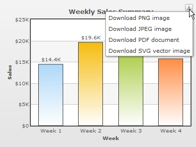

| Exporting Pure JavaScript Charts |
Pure JavaScript charts also provide support for exporting to JPEG, PNG, PDF, SVG formats. Let's see how we can implement this feature. |
| Enabling Export |
|
Similar to FusionCharts Flash-based charts, the JavaScript chart's export feature can be enabled by specifying the exportEnabled="1" of the <chart> XML element or exportEnabled:"1" in JSON. The following sample data enables the exporting feature of FusionCharts (both Flash and JavaScript charts alike) using the default settings. <chart exportEnabled='1' caption='Weekly Sales Summary' xAxisName='Week' yAxisName='Sales' numberPrefix='$' > {
|
Once the exportEnabled attribute is set, a "Download" button will be displayed on the top right corner of your chart. This button, when clicked, will provide you a list of various export file formats thereby enabling you to download an image or PDF version of the chart. The following image shows how the list would appear when the above data is used in a column 2D chart.  See it live! During export of the pure JavaScript charts, the chart data is sent to external servers for processing and converting to image. User must have an active internet connection for this feature to work. In case you want to process the exported data on an external server, you may setup the chart to send the data your own server. The details of how to do the same has been explained later on this page. There is a possibility that the exported image/PDF appears slightly visually different with respect to colors and effects from your original chart that is being exported. FusionCharts Flash charts do not have a button to export the chart. Instead, upon right- clicking the Flash charts, users can select exporting options using a context-menu. |
| Customizing the Export Feature |
The export features of the JavaScript charts presently have limited customizability when compared to the Flash FusionCharts. This is primarily owing to certain limitations of the present JavaScript export feature. You can hide the "Download" button on the chart using the exportShowMenuItem="0". This will hide the export button. But, you would still be able to export the chart using its JavaScript API similar to FusionCharts Flash charts. There are other settings that you can configure using _overrideJSChartConfiguration function provided by the chart. This function takes an Object as parameter. You can pass the following export settings through this function:
Please go through the High Charts Options Reference (online) for detailed information on each of the above settings. The following code shows how you can configure the settings: // Check whether it is an js chart or not
if( typeof chartObj1._overrideJSChartConfiguration === 'function'){
// pass exporting configuration module
chartObj1._overrideJSChartConfiguration({
exporting:{
type: 'application/pdf',
filename : 'mychart'
}
});
}
In the above code:
|
| Customizing the Export Feature to Process Data on Your Own Server |
|
If you want to set up the export service on your own server, download index.php provided by Highcharts download pack. This file helps you bypass export data to the export modules ( which are a set of Java runtime and Java library files ). You need to download and setup Download Batik from batik-rasterizer.jar and the entire lib directory to a location on your web server. Additionally, and most importantly, you need to set the path of the index.php as the export handler through the chart's configuration. The following code shows how to set this URL using _overrideJSChartConfiguration function: // Check whether it is an javascript chart or not
if( typeof chartObj1._overrideJSChartConfiguration === 'function'){
// pass exporting configuration module
chartObj1._overrideJSChartConfiguration({
exporting:{
url: '../export/JSChartExport/index.php //path of HC exporter
}
});
}
|
|
Checklist while you setup:
For detailed information on setting up the export modules please refer to http://www.highcharts.com/documentation/how-to-use. |